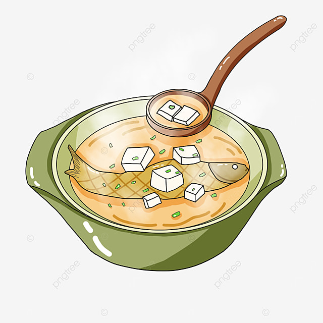

Back
Fiskasupa

Description
Given their expertise in fishing, it’s no surprise that fish was a common Viking meal.
This hearty stew would warm them on cold nights.
Ingredients
- 2 lbs mixed fish
- 1 large onion, chopped
- 4 cups fish or vegetable broth
- 2 cups diced root vegetables
- 1 cup leeks, sliced
- 1 tsp dill
- Salt and pepper to taste
Steps
- In a large pot, saute the onion and leeks until translucent.
- Add the root vegetables and cook for another 5 minutes.
- Pour in the broth and bring to a boil. Reduce heat and let simmer until vegetables are tender.
- Add the fish and dill. Cook for another 10 minutes or until the fish is cooked through.
Enjoy this delicious stew with a slice of flatbread.